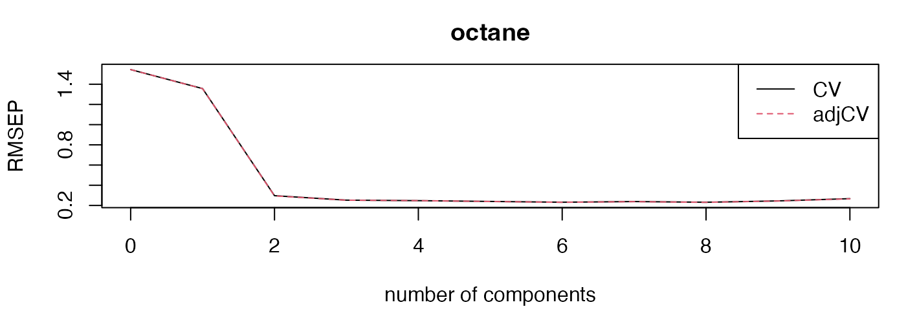
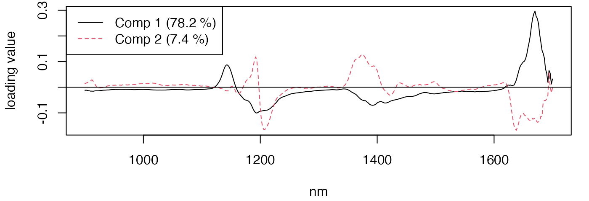
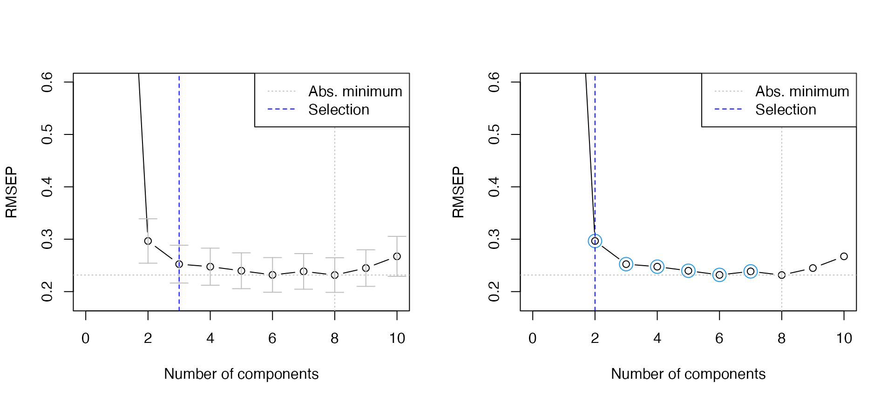
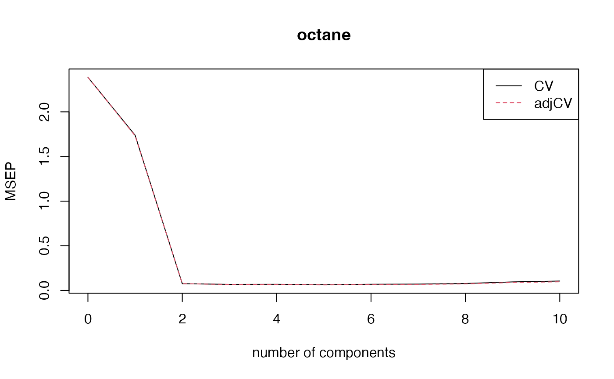
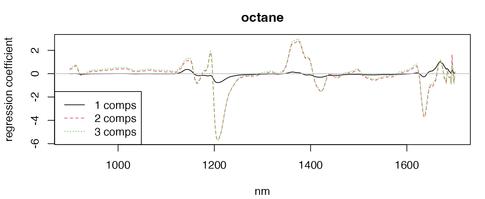

Introduction to the pls Package
Bjørn-Helge Mevik
Ron Wehrens
Kristian Hovde Liland
Source:vignettes/pls-manual.Rmd
pls-manual.Rmd##
## Attaching package: 'pls'## The following object is masked from 'package:stats':
##
## loadingsAbstract
The pls package implements Principal Component Regression (PCR) and Partial Least Squares Regression (PLSR) in R, and is freely available from the CRAN website, licensed under the Gnu General Public License (GPL).
The user interface is modelled after the traditional formula
interface, as exemplified by lm. This was done so that
people used to R would not have to learn yet another
interface, and also because we believe the formula interface is a good
way of working interactively with models. It thus has methods for
generic functions like predict, update and
coef. It also has more specialised functions like
scores, loadings and RMSEP, and a
flexible cross-validation system. Visual inspection and assessment is
important in chemometrics, and the pls package has a
number of plot functions for plotting scores, loadings, predictions,
coefficients and RMSEP estimates.
The package implements PCR and several algorithms for PLSR. The design is modular, so that it should be easy to use the underlying algorithms in other functions. It is our hope that the package will serve well both for interactive data analysis and as a building block for other functions or packages using PLSR or PCR.
We will here describe the package and how it is used for data analysis, as well as how it can be used as a part of other packages. Also included is a section about formulas and data frames, for people not used to the R modelling idioms.
1 Introduction
This vignette is meant as an introduction to the pls package. It is based on the paper ‘The pls Package: Principal Component and Partial Least Squares Regression in R’, published in Journal of Statistical Software (Mevik and Wehrens 2007), but has been extended to reflect further developments in the package. The PLSR methodology is shortly described in Section 2. Section 3 presents an example session, to get an overview of the package. In Section 4 we describe formulas and data frames (as they are used in pls). Users familiar with formulas and data frames in R can skip this section on first reading. Fitting of models is described in Section 5, and cross-validatory choice of components is discussed in Section 6. Next, inspecting and plotting models is described (Section 7), followed by a section on predicting future observations (Section 8). Finally, Section 9 covers more advanced topics such as parallel computing, setting options, using the underlying functions directly, and implementation details.
2 Theory
Multivariate regression methods like Principal Component Regression (PCR) and Partial Least Squares Regression (PLSR) enjoy large popularity in a wide range of fields, including the natural sciences. The main reason is that they have been designed to confront the situation that there are many, possibly correlated, predictor variables, and relatively few samples—a situation that is common, especially in chemistry where developments in spectroscopy since the seventies have revolutionised chemical analysis. In fact, the origin of PLSR lies in chemistry (see, e.g., (Wold 2001; Martens 2001)). The field of near-infrared (NIR) spectroscopy, with its highly overlapping lines and difficult to interpret overtones, would not have existed but for a method to obtain quantitative information from the spectra. Also other fields have benefited greatly from multivariate regression methods like PLSR and PCR. In medicinal chemistry, for example, one likes to derive molecular properties from the molecular structure. Most of these Quantitative Structure-Activity Relations (QSAR, and also Quantitative Structure-Property Relations, QSPR), and in particular, Comparative Molecular Field Analysis (ComFA) (Cramer et al. 1988), use PLSR. Other applications range from statistical process control (Kresta et al. 1991) to tumour classification (Nguyen and Rocke 2002) to spatial analysis in brain images (McIntosh et al. 1996) to marketing (Fornell and Bookstein 1982).
In the usual multiple linear regression (MLR) context, the least-squares solution for
is given by
The problem often is that is singular, either because the number of variables (columns) in exceeds the number of objects (rows), or because of collinearities. Both PCR and PLSR circumvent this by decomposing into orthogonal scores and loadings
and regressing not on itself but on the first columns of the scores . In PCR, the scores are given by the left singular vectors of , multiplied with the corresponding singular values, and the loadings are the right singular vectors of . This, however, only takes into account information about , and therefore may be suboptimal for prediction purposes. PLSR aims to incorporate information on both and in the definition of the scores and loadings. In fact, for one specific version of PLSR, called SIMPLS (Jong 1993), it can be shown that the scores and loadings are chosen in such a way to describe as much as possible of the covariance between and , where PCR concentrates on the variance of . Other PLSR algorithms give identical results to SIMPLS in the case of one variable, but deviate slightly for the multivariate case ; the differences are not likely to be important in practice.
2.1 Algorithms
In PCR, we approximate the matrix by the first Principal Components (PCs), usually obtained from the singular value decomposition (SVD):
Next, we regress on the scores, which leads to regression coefficients
where the subscripts have been dropped for clarity. For PLSR, the components, called Latent Variables (LVs) in this context, are obtained iteratively. One starts with the SVD of the crossproduct matrix , thereby including information on variation in both and , and on the correlation between them. The first left and right singular vectors, and , are used as weight vectors for and , respectively, to obtain scores and :
where and are initialised as and , respectively. The X scores are often normalised:
The Y scores are not actually necessary in the regression but are often saved for interpretation purposes. Next, X and Y loadings are obtained by regressing against the same vector :
Finally, the data matrices are ‘deflated’: the information related to this latent variable, in the form of the outer products and , is subtracted from the (current) data matrices and .
The estimation of the next component then can start from the SVD of the crossproduct matrix . After every iteration, vectors , , and are saved as columns in matrices , , and , respectively. One complication is that columns of matrix can not be compared directly: they are derived from successively deflated matrices and . It has been shown that an alternative way to represent the weights, in such a way that all columns relate to the original matrix, is given by
Now, we are in the same position as in the PCR case: instead of regressing on , we use scores to calculate the regression coefficients, and later convert these back to the realm of the original variables by pre-multiplying with matrix (since ):
Again, here, only the first components are used. How many components are optimal has to be determined, usually by cross-validation.
Many alternative formulations can be found in literature. It has been shown, for instance, that only one of and needs to be deflated ; alternatively, one can directly deflate the crossproduct matrix (as is done in SIMPLS, for example). Moreover, there are many equivalent ways of scaling. In the example above, the scores have been normalised, but one can also choose to introduce normalisation at another point in the algorithm. Unfortunately, this can make it difficult to directly compare the scores and loadings of different PLSR implementations.
2.2 On the use of PLSR and PCR
In theory, PLSR should have an advantage over PCR. One could imagine a situation where a minor component in is highly correlated with ; not selecting enough components would then lead to very bad predictions. In PLSR, such a component would be automatically present in the first LV. In practice, however, there is hardly any difference between the use of PLSR and PCR ; in most situations, the methods achieve similar prediction accuracies, although PLSR usually needs fewer latent variables than PCR. Put the other way around: with the same number of latent variables, PLSR will cover more of the variation in and PCR will cover more of . In turn, both behave very similar to ridge regression (Frank and Friedman 1993).
It can also be shown that both PCR and PLSR behave as shrinkage methods (Hastie et al. 2001), although in some cases PLSR seems to increase the variance of individual regression coefficients, one possible explanation of why PLSR is not always better than PCR.
3 Example session
In this section we will walk through an example session, to get an overview of the package. To be able to use the package, one first has to load it:
This prints a message telling that the package has been attached, and
that the package implements a function loadings that masks
a function of the same name in package stats. (The
output of the commands have in some cases been suppressed to save
space.)
Four example data sets are included in pls:
-
yarn: A data set with 28 near-infrared spectra (NIR) of PET yarns, measured at 268 wavelengths, as predictors, and density as response (density) (Swierenga et al. 1999). The data set also includes a logical variabletrainwhich can be used to split the data into a training data set of size 21 and test data set of size 7. See?yarnfor details. -
oliveoil: A data set with 5 quality measurements (chemical) and 6 panel sensory panel variables (sensory) made on 16 olive oil samples (Massart et al. 1998). See?oliveoilfor details. -
gasoline: A data set consisting of octane number (octane) and NIR spectra (NIR) of 60 gasoline samples (Kalivas 1997). Each NIR spectrum consists of 401 diffuse reflectance measurements from 900 to 1700 nm. See?gasolinefor details. -
mayonnaise: A data set consisting of oil type (oil.type), experimental design (design), train-test split (train) and NIR spectra (NIR) of 162 mayonnaise samples (Indahl et al. 1999). Each NIR spectrum consists of 351 measurements from 1100 to 2500 nm. See?mayonnaisefor details.
These will be used in the examples that follow. To use the data sets, they must first be loaded:
For the rest of the paper, it will be assumed that the package and
the data sets have been loaded as above. Also, all examples are run with
options(digits = 4).
Gasoline NIR spectra
In this section, we will do a PLSR on the gasoline data
to illustrate the use of pls. The spectra are shown in
Figure 1. We first divide the data set into train and test data
sets:
gasTrain <- gasoline[1:50,]
gasTest <- gasoline[51:60,]A typical way of fitting a PLSR model is
gas1 <- plsr(octane ~ NIR, ncomp = 10, data = gasTrain, validation = "LOO")This fits a model with 10 components, and includes
leave-one-out (LOO) cross-validated predictions (Lachenbruch and Mickey 1968). We can get an
overview of the fit and validation results with the summary
method:
summary(gas1)## Data: X dimension: 50 401
## Y dimension: 50 1
## Fit method: kernelpls
## Number of components considered: 10
##
## VALIDATION: RMSEP
## Cross-validated using 50 leave-one-out segments.
## (Intercept) 1 comps 2 comps 3 comps 4 comps 5 comps 6 comps
## CV 1.545 1.357 0.2966 0.2524 0.2476 0.2398 0.2319
## adjCV 1.545 1.356 0.2947 0.2521 0.2478 0.2388 0.2313
## 7 comps 8 comps 9 comps 10 comps
## CV 0.2386 0.2316 0.2449 0.2673
## adjCV 0.2377 0.2308 0.2438 0.2657
##
## TRAINING: % variance explained
## 1 comps 2 comps 3 comps 4 comps 5 comps 6 comps 7 comps 8 comps
## X 78.17 85.58 93.41 96.06 96.94 97.89 98.38 98.85
## octane 29.39 96.85 97.89 98.26 98.86 98.96 99.09 99.16
## 9 comps 10 comps
## X 99.02 99.19
## octane 99.28 99.39The validation results here are Root Mean Squared Error of
Prediction (RMSEP). There are two cross-validation estimates:
CV is the ordinary CV estimate, and adjCV is a
bias-corrected CV estimate (Mevik and Cederkvist
2004). (For a LOO CV, there is virtually no difference) .
It is often simpler to judge the RMSEPs by plotting them:

Cross-validated RMSEP curves for the gasoline data
This plots the estimated RMSEPs as functions of the number of
components (Figure 2). The legendpos argument adds a legend
at the indicated position. Two components seem to be enough. This gives
an RMSEP of 0.297.
As mentioned in the introduction, the main practical difference between PCR and PLSR is that PCR often needs more components than PLSR to achieve the same prediction error. On this data set, PCR would need three components to achieve the same RMSEP. Once the number of components has been chosen, one can inspect different aspects of the fit by plotting predictions, scores, loadings, etc. The default plot is a prediction plot:
plot(gas1, ncomp = 2, asp = 1, line = TRUE)Cross-validated predictions for the gasoline data
This shows the cross-validated predictions with two components versus
measured values (Figure 3). We have chosen an aspect ratio of 1, and to
draw a target line. The points follow the target line quite nicely, and
there is no indication of a curvature or other anomalies. Other plots
can be selected with the argument plottype:
plot(gas1, plottype = "scores", comps = 1:3)Score plot for the gasoline data
This gives a pairwise plot of the score values for the three first
components (Figure 4). Score plots are often used to look for patterns,
groups or outliers in the data. (For instance, plotting the two first
components for a model built on the yarn dataset clearly
indicates the experimental design of that data.) In this example, there
is no clear indication of grouping or outliers. The numbers in
parentheses after the component labels are the relative amount of X
variance explained by each component. The explained variances can be
extracted explicitly with
explvar(gas1)## Comp 1 Comp 2 Comp 3 Comp 4 Comp 5 Comp 6 Comp 7 Comp 8 Comp 9 Comp 10
## 78.1708 7.4122 7.8242 2.6578 0.8768 0.9466 0.4922 0.4723 0.1688 0.1694The loading plot (Figure 5) is much used for interpretation purposes, for instance to look for known spectral peaks or profiles:
par(mar = c(4, 4, 0.3, 1) + 0.1)
plot(gas1, "loadings", comps = 1:2, legendpos = "topleft",
labels = "numbers", xlab = "nm")
abline(h = 0)
Loading plot for the gasoline data
The labels = "numbers" argument makes the plot function
try to interpret the variable names as numbers, and use them as
axis labels. Score and loading plots also have their own plotting
functions, scoreplot and loadingplot, which
have more options for plotting scores and loadings, respectively. For
instance, scoreplotand its companion extractor
scores has the same argument as RMSEP/MSEP/R2
called estimate, which can be used to plot cross-validated
scores or test data scores, e.g.,
Calibrated and cross-validated score plots for the gasoline data
par(par.old)A fitted model is often used to predict the response values of new
observations. The following predicts the responses for the ten
observations in gasTest, using two components:
predict(gas1, ncomp = 2, newdata = gasTest)## , , 2 comps
##
## octane
## 51 87.94
## 52 87.25
## 53 88.16
## 54 84.97
## 55 85.15
## 56 84.51
## 57 87.56
## 58 86.85
## 59 89.19
## 60 87.09Because we know the true response values for these samples, we can calculate the test set RMSEP:
RMSEP(gas1, newdata = gasTest)## (Intercept) 1 comps 2 comps 3 comps 4 comps 5 comps
## 1.5369 1.1696 0.2445 0.2341 0.3287 0.2780
## 6 comps 7 comps 8 comps 9 comps 10 comps
## 0.2703 0.3301 0.3571 0.4090 0.6116For two components, we get 0.244, which is quite close to the cross-validated estimate above (0.297).
4 Formulas and data frames
The pls package has a formula interface that works
like the formula interface in R’s standard
lm functions, in most ways. This section gives a short
description of formulas and data frames as they apply to
pls. More information on formulas can be found in the
lm help file, in Chapter 11 of ‘An Introduction to R’, and
in Chapter 2 of ‘The White Book’ (Chambers and
Hastie 1992). These are good reads for anyone wanting to
understand how R works with formulas, and the user is
strongly advised to read them.
4.1 Formulas
A formula consists of a left hand side (lhs), a
tilde (~), and a right hand side (rhs). The lhs
consists of a single term, representing the response(s). The rhs
consists of one or more terms separated by +, representing
the regressor(s). For instance, in the formula
a ~ b + c + d, a is the response, and
b, c, and d are the regressors.
The intercept is handled automatically, and need not be specified in the
formula. Each term represents a matrix, a numeric vector or a factor (a
factor should not be used as the response). If the response term is a
matrix, a multi-response model is fit. In pls, the
right hand side quite often consists of a single term, representing a
matrix regressor: y ~ X. It is also possible to specify
transformations of the variables. For instance,
log(y) ~ msc(Z) specifies a regression of the logarithm of
y onto Z after Z has been
transformed by Multiplicative Scatter (or Signal) Correction
(MSC) (Geladi et al. 1985), a
pre-treatment that is very common in infrared spectroscopy. If the
transformations contain symbols that are interpreted in the formula
handling, e.g., +, * or ^, the
terms should be protected with the I() function, like this:
y ~ x1 + I(x2 + x3). This specifies two
regressors: x1, and the sum of x2 and
x3.
4.2 Data frames
The fit functions first look for the specified variables in a
supplied data frame, and it is advisable to collect all variables there.
This makes it easier to know what data has been used for fitting, to
keep different variants of the data around, and to predict new data. To
create a data frame, one can use the data.frame function:
if v1, v2 and v3 are factors or
numeric vectors,
mydata <- data.frame(y = v1, a = v2, b = v3) will result
in a data frame with variables named y, a and
b. PLSR and PCR are often used with a matrix as the single
predictor term (especially when one is working with spectroscopic data).
Also, multi-response models require a matrix as the response term. If
Z is a matrix, it has to be protected by the ‘protect
function’ I() in calls to data.frame:
mydata <- data.frame(..., Z = I(Z)). Otherwise, it will
be split into separate variables for each column, and there will be no
variable called Z in the data frame, so we cannot use
Z in the formula. One can also add the matrix to an
existing data frame:
> mydata <- data.frame(...)
> mydata$Z <- ZThis will also prevent Z from being split into separate
variables. Finally, one can use cbind to combine vectors
and matrices into matrices on the fly in the formula. This is most
useful for the response, e.g., cbind(y1, y2) ~ X. Variables
in a data frame can be accessed with the $ operator, e.g.,
mydata$y. However, the pls functions
access the variables automatically, so the user should never use
$ in formulas.
5 Fitting models
The main functions for fitting models are pcr and
plsr. (They are simply wrappers for the function
mvr, selecting the appropriate fit algorithm) . We will use
plsr in the examples in this section, but everything could
have been done with pcr (or mvr). In its
simplest form, the function call for fitting models is
plsr(formula, ncomp, data) (where plsr can be
substituted with pcr or mvr). The argument
formula is a formula as described above, ncomp
is the number of components one wishes to fit, and data is
the data frame containing the variables to use in the model. The
function returns a fitted model (an object of class "mvr")
which can be inspected (Section 7) or used for predicting new
observations (Section 8). For instance:
dens1 <- plsr(density ~ NIR, ncomp = 5, data = yarn)If the response term of the formula is a matrix, a multi-response model is fit, e.g.,:
dim(oliveoil$sensory)## [1] 16 6
plsr(sensory ~ chemical, data = oliveoil)## Partial least squares regression, fitted with the kernel algorithm.
## Call:
## pls::plsr(formula = sensory ~ chemical, data = oliveoil)(As we see, the print method simply tells us what type
of model this is, and how the fit function was called.)
The argument ncomp is optional. If it is missing, the
maximal possible number of components are used. Also data
is optional, and if it is missing, the variables specified in the
formula is searched for in the global environment (the user’s
workspace). Usually, it is preferable to keep the variables in data
frames, but it can sometimes be convenient to have them in the global
environment. If the variables reside in a data frame,
e.g. yarn, do not be tempted to use formulas like
yarn$density ~ yarn$NIR! Use density ~ NIR and
specify the data frame with data = yarn as above. There are
facilities for working interactively with models. To use only part of
the samples in a data set, for instance the first 20, one can use
arguments subset = 1:20 or data = yarn[1:20,].
Also, if one wants to try different alternatives of the model, one can
use the function update. For instance
will refit the model dens1 using only the observations
which are marked as TRUE in yarn$train,
and
dens3 <- update(dens1, ncomp = 10)will change the number of components to 10. Other arguments, such as
formula, can also be changed with update. This
can save a bit of typing when working interactively with models (but it
doesn’t save computing time; the model is refitted each time). In
general, the reader is referred to ‘The White Book’ (Chambers and Hastie 1992) or ‘An Introduction
to R’ for more information about fitting and working with models in
R.
Missing data can sometimes be a problem. The PLSR and PCR algorithms
currently implemented in pls do not handle missing
values intrinsically, so observations with missing values must be
removed. This can be done with the na.action argument. With
na.action = na.omit (the default), any observation with
missing values will be removed from the model completely. With
na.action = na.exclude, they will be removed from the
fitting process, but included as NAs in the residuals and
fitted values. If you want an explicit error when there are missing
values in the data, use na.action = na.fail. The default
na.action can be set with options(), e.g.,
options(na.action = quote(na.fail)).
Standardisation and other pre-treatments of predictor variables are
often called for. In pls, the predictor variables are
always centered, as a part of the fit algorithm. Scaling can be
requested with the scale argument. If scale is
TRUE, each variable is standardised by dividing it by its
standard deviation, and if scale is a numeric vector, each
variable is divided by the corresponding number. For instance, this will
fit a model with standardised chemical measurements:
olive1 <- plsr(sensory ~ chemical, scale = TRUE, data = oliveoil)As mentioned earlier, MSC (Geladi et al.
1985) is implemented in pls as a function
msc that can be used in formulas:
This scatter corrects NIR prior to the fitting, and
arranges for new spectra to be automatically scatter corrected (using
the same reference spectrum as when fitting) in
predict:
predict(gas2, ncomp = 3, newdata = gasTest)There are other arguments that can be given in the fit call:
validation is for selecting validation, and
... is for sending arguments to the underlying functions,
notably the cross-validation function mvrCv. For the other
arguments, see ?mvr.
6 Choosing the number of components with cross-validation
Cross-validation, commonly used to determine the optimal number of
components to take into account, is controlled by the
validation argument in the modelling functions
(mvr, plsr and pcr). The default
value is "none". Supplying a value of "CV" or
"LOO" will cause the modelling procedure to call
mvrCv to perform cross-validation; "LOO"
provides leave-one-out cross-validation, whereas "CV"
divides the data into segments. Default is to use ten segments, randomly
selected, but also segments of consecutive objects or interleaved
segments (sometimes also referred to as ‘Venetian blinds’) are possible
through the use of the argument segment.type. One can also
specify the segments explicitly with the argument segments;
see ?mvrCv for details. When validation is performed in
this way, the model will contain an element comprising information on
the out-of-bag predictions (in the form of predicted values, as well as
MSEP and R2 values). As a reference, the MSEP error using no components
at all is calculated as well. The validation results can be visualised
using the plottype = "validation" argument of the standard
plotting function. An example is shown in Figure 2 for the gasoline
data; typically, one would select a number of components after which the
cross-validation error does not show a significant decrease. The
decision on how many components to retain will to some extent always be
subjective. However, especially when building large numbers of models
(e.g., in simulation studies), it can be crucial to have a consistent
strategy on how to choose the “optimal” number of components. Two such
strategies have been implemented in function selectNcomp.
The first is based on the so-called one-sigma heuristic (Hastie et al. 2013) and consists of choosing
the model with fewest components that is still less than one standard
error away from the overall best model. The second strategy employs a
permutation approach, and basically tests whether adding a new component
is beneficial at all (Voet 1994). It is
implemented backwards, again taking the global minimum in the
crossvalidation curve as a starting point, and assessing models with
fewer and fewer components: as long as no significant deterioration in
performance is found (by default on the
level), the algorithm continues to remove components. Applying the
function is quite straightforward:
ncomp.onesigma <- selectNcomp(gas2, method = "onesigma", plot = TRUE,
ylim = c(.18, .6))
ncomp.permut <- selectNcomp(gas2, method = "randomization", plot = TRUE,
ylim = c(.18, .6))This leads to the plots in Figure 6 – note that graphical arguments can be supplied to customize the plots. In both cases, the global minimum of the crossvalidation curve is indicated with gray dotted lines, and the suggestion for the optimal number of components with a vertical blue dashed line. The left plot shows the width of the one-sigma intervals on which the suggestion is based ; the right plot indicates which models have been assessed by the permutation approach through the large blue circles. The two criteria do not always agree (as in this case) but usually are quite close.

The two strategies for suggesting optimal model dimensions: the left plot shows the one-sigma strategy, the right plot the permutation strategy.
When a pre-treatment that depends on the composition of the training
set is applied, the cross-validation procedure as described above is not
optimal, in the sense that the cross-validation errors are biased
downward. As long as the only purpose is to select the optimal number of
components, this bias may not be very important, but it is not too
difficult to avoid it. The modelling functions have an argument
scale that can be used for auto-scaling per segment.
However, more elaborate methods such as MSC need explicit handling per
segment. For this, the function crossval is available. It
takes an mvr object and performs the cross-validation as it
should be done: applying the pre-treatment for each segment. The results
can be shown in a plot (which looks very similar to Figure 2) or
summarised in numbers.

summary(gas2.cv, what = "validation")## Data: X dimension: 50 401
## Y dimension: 50 1
## Fit method: kernelpls
## Number of components considered: 10
##
## VALIDATION: RMSEP
## Cross-validated using 10 random segments.
## (Intercept) 1 comps 2 comps 3 comps 4 comps 5 comps 6 comps
## CV 1.545 1.319 0.2754 0.2614 0.2630 0.2546 0.2636
## adjCV 1.545 1.316 0.2745 0.2601 0.2582 0.2500 0.2571
## 7 comps 8 comps 9 comps 10 comps
## CV 0.2671 0.2794 0.3098 0.3250
## adjCV 0.2605 0.2713 0.2986 0.3119Applying MSC in this case leads to nearly identical cross-validation
estimates of prediction error. When the scaling does not depend on the
division of the data into segments (e.g., log-scaling), functions
crossval and mvrCv give the same results ;
however, crossval is much slower.
Cross-validation can be computationally demanding (especially when
using the function crossval). Therefore, both
mvrCv and crossval can perform the
calculations in parallel on a multi-core machine or on several machines.
How to do this is described in Section 9.2.
7 Inspecting fitted models
A closer look at the fitted model may reveal interesting agreements or disagreements with what is known about the relations between X and Y. Several functions are implemented in pls for plotting, extracting and summarising model components.
7.1 Plotting
One can access all plotting functions through the
"plottype" argument of the plot method for
mvr objects. This is simply a wrapper function calling the
actual plot functions; the latter are available to the user as well. The
default plot is a prediction plot (predplot), showing
predicted versus measured values. Test set predictions are used if a
test set is supplied with the newdata argument. Otherwise,
if the model was built using cross-validation, the cross-validated
predictions are used, otherwise the predictions for the training set.
This can be overridden with the which argument. An example
of this type of plot can be seen in Figure 3. An optional argument can
be used to indicate how many components should be included in the
prediction. To assess how many components are optimal, a validation plot
(validationplot) can be used such as the one shown in
Figure 2; this shows a measure of prediction performance (either RMSEP,
MSEP, or
)
against the number of components. Usually, one takes the first local
minimum rather than the absolute minimum in the curve, to avoid
over-fitting. The regression coefficients can be visualised using
plottype = "coef" in the plot method, or
directly through function coefplot. This allows
simultaneous plotting of the regression vectors for several different
numbers of components at once. The regression vectors for the
gasoline data set using MSC are shown in Figure 7 using the
command
plot(gas1, plottype = "coef", ncomp=1:3, legendpos = "bottomleft",
labels = "numbers", xlab = "nm")
Regression coefficients for the gasoline data
Note that the coefficients for two components and three components
are similar. This is because the third component contributes little to
the predictions. The RMSEPs (see Figure 2) and predictions (see Section
8) for two and three components are quite similar. Scores and loadings
can be plotted using functions scoreplot (an example is
shown in Figure 4) and loadingplot (in Figure 5),
respectively. One can indicate the number of components with the
comps argument ; if more than two components are given,
plotting the scores will give a pairs plot, otherwise a scatter plot.
For loadingplot, the default is to use line plots.
Finally, a ‘correlation loadings’ plot (function
corrplot, or plottype = "correlation" in
plot) shows the correlations between each variable and the
selected components (see Figure 8). These plots are scatter plots of two
sets of scores with concentric circles of radii given by
radii. Each point corresponds to an X variable. The squared
distance between the point and the origin equals the fraction of the
variance of the variable explained by the components in the panel. The
default values for radii correspond to 50% and 100%
explained variance, respectively.
Correlation loadings plot for the gasoline data
The plot functions accept most of the ordinary plot parameters, such
as col and pch. If the model has several
responses or one selects more than one model size,
e.g. ncomp = 4:6, in some plot functions (notably
prediction plots (see below), validation plots and coefficient plots)
the plot window will be divided and one plot will be shown for each
combination of response and model size. The number of rows and columns
are chosen automatically, but can be specified explicitly with arguments
nRows and nCols. If there are more plots than
fit the plot window, one will be asked to press return to see the rest
of the plots.
7.2 Extraction
Regression coefficients can be extracted using the generic function
coef; the function takes several arguments, indicating the
number of components to take into account, and whether the intercept is
needed (default is FALSE). Scores and loadings can be
extracted using functions scores and loadings
for X, and Yscores and Yloadings for Y. These
also return the percentage of variance explained as attributes. In PLSR,
weights can be extracted using the function
loading.weights. When applied to a PCR model, the function
returns NULL. Note that commands like
plot(scores(gas1)) are perfectly correct, and lead to
exactly the same plots as using scoreplot. The
vcov function can be used to get the covariance matrix of
pcr models, e.g., for uncertainty plotting (see
?vcov.mvr).
7.3 Summaries
The print method for an object of class
"mvr" shows the regression type used, perhaps indicating
the form of validation employed, and shows the function call. The
summary method gives more information: it also shows the
amount of variance explained by the model (for all choices of
,
the number of latent variables). The summary method has an
additional argument (what) to be able to focus on the
training phase or validation phase, respectively. Default is to print
both types of information.
7.4 Tidy outputs
For workflows that use long-format data frames, pls
provides tidy, glance and augment
methods for mvr objects, and a tidy method for
validation objects such as RMSEP.
data(yarn)
d <- yarn[1:20, , drop = FALSE]
mod_tidy <- plsr(density ~ NIR, ncomp = 2, data = d, validation = "CV")
# Long-format model components
head(tidy(mod_tidy, what = c("weights", "loadings", "coefficients")))## kind name response component value
## 1 weights NIR1 <NA> 1 0.0008485
## 2 weights NIR2 <NA> 1 0.0122387
## 3 weights NIR3 <NA> 1 0.0277712
## 4 weights NIR4 <NA> 1 0.0404801
## 5 weights NIR5 <NA> 1 0.0430031
## 6 weights NIR6 <NA> 1 0.0355024## metric estimate response component model cumulative value
## 1 RMSEP train density 0 (Intercept) TRUE 29.570
## 2 RMSEP CV density 0 (Intercept) TRUE 31.126
## 3 RMSEP train density 1 1 comps TRUE 6.142
## 4 RMSEP CV density 1 1 comps TRUE 7.175
## 5 RMSEP train density 2 2 comps TRUE 3.859
## 6 RMSEP CV density 2 2 comps TRUE 4.781
# One-row summary
glance(mod_tidy)## method ncomp nobs nresp has_validation r2_train_mean rmsep_train_mean
## 1 kernelpls 2 20 1 TRUE 0.983 3.859
## r2_cv_mean rmsep_cv_mean
## 1 0.9739 4.781## density NIR.1 NIR.2 NIR.3 NIR.4 NIR.5 NIR.6 NIR.7 NIR.8 NIR.9 NIR.10
## 1 100.00 3.0663 3.0861 3.1079 3.0972 2.9979 2.8273 2.6233 2.4039 2.1931 2.0058
## 2 80.22 3.0675 3.0857 3.0958 3.0692 2.9818 2.8408 2.6760 2.5059 2.3506 2.2230
## 3 79.49 3.0750 3.0966 3.0916 3.0288 2.8849 2.6885 2.4764 2.2694 2.0824 1.9195
## 4 60.80 3.0828 3.0973 3.1010 3.0735 2.9913 2.8709 2.7392 2.6102 2.5000 2.4237
## 5 59.97 3.1029 3.1034 3.0848 3.0228 2.8927 2.7159 2.5384 2.3764 2.2397 2.1346
## 6 60.48 3.0815 3.0849 3.0487 2.9305 2.7323 2.5089 2.2944 2.0995 1.9328 1.7925
## NIR.11 NIR.12 NIR.13 NIR.14 NIR.15 NIR.16 NIR.17 NIR.18 NIR.19 NIR.20 NIR.21
## 1 1.8379 1.6907 1.5777 1.5033 1.4381 1.3373 1.2206 1.1410 1.1161 1.1329 1.1604
## 2 2.1192 2.0352 1.9795 1.9554 1.9396 1.8931 1.8198 1.7550 1.7122 1.6832 1.6461
## 3 1.7747 1.6490 1.5533 1.4907 1.4363 1.3540 1.2603 1.1979 1.1788 1.1900 1.2053
## 4 2.3774 2.3526 2.3506 2.3721 2.4009 2.4042 2.3756 2.3321 2.2768 2.2053 2.1085
## 5 2.0534 1.9909 1.9522 1.9393 1.9337 1.9047 1.8535 1.8047 1.7650 1.7266 1.6753
## 6 1.6693 1.5633 1.4836 1.4310 1.3851 1.3193 1.2468 1.1999 1.1851 1.1896 1.1931
## NIR.22 NIR.23 NIR.24 NIR.25 NIR.26 NIR.27 NIR.28 NIR.29 NIR.30 NIR.31 NIR.32
## 1 1.1638 1.1527 1.1515 1.1277 1.0681 1.0197 1.0084 1.0321 1.0828 1.1408 1.1788
## 2 1.5810 1.5091 1.4521 1.3802 1.2865 1.2045 1.1508 1.1308 1.1438 1.1761 1.2041
## 3 1.1985 1.1804 1.1727 1.1513 1.1042 1.0665 1.0593 1.0807 1.1245 1.1751 1.2105
## 4 1.9815 1.8544 1.7459 1.6310 1.5083 1.3954 1.2976 1.2297 1.2022 1.2088 1.2278
## 5 1.5999 1.5207 1.4575 1.3898 1.3114 1.2421 1.1904 1.1630 1.1655 1.1901 1.2163
## 6 1.1778 1.1538 1.1405 1.1220 1.0875 1.0604 1.0562 1.0742 1.1106 1.1542 1.1873
## NIR.33 NIR.34 NIR.35 NIR.36 NIR.37 NIR.38 NIR.39 NIR.40 NIR.41 NIR.42 NIR.43
## 1 1.2018 1.2349 1.2776 1.3125 1.3431 1.3766 1.4145 1.4571 1.5031 1.5457 1.5762
## 2 1.2292 1.2690 1.3180 1.3574 1.3924 1.4335 1.4792 1.5239 1.5657 1.6045 1.6366
## 3 1.2357 1.2724 1.3204 1.3659 1.4096 1.4529 1.4976 1.5460 1.5938 1.6320 1.6575
## 4 1.2553 1.3016 1.3567 1.4006 1.4399 1.4881 1.5412 1.5877 1.6249 1.6592 1.6928
## 5 1.2443 1.2880 1.3421 1.3918 1.4400 1.4908 1.5430 1.5931 1.6366 1.6709 1.6982
## 6 1.2147 1.2547 1.3070 1.3618 1.4175 1.4692 1.5190 1.5724 1.6216 1.6547 1.6754
## NIR.44 NIR.45 NIR.46 NIR.47 NIR.48 NIR.49 NIR.50 NIR.51 NIR.52 NIR.53 NIR.54
## 1 1.6084 1.6605 1.7264 1.7977 1.8791 1.9835 2.1216 2.2734 2.4047 2.5122 2.6176
## 2 1.6725 1.7260 1.7932 1.8686 1.9561 2.0683 2.2159 2.3712 2.4851 2.5590 2.6399
## 3 1.6918 1.7518 1.8215 1.8862 1.9618 2.0727 2.2230 2.3876 2.5381 2.6614 2.7637
## 4 1.7325 1.7870 1.8548 1.9343 2.0282 2.1481 2.3036 2.4589 2.5513 2.5923 2.6528
## 5 1.7365 1.7976 1.8684 1.9377 2.0199 2.1391 2.2995 2.4665 2.5950 2.6826 2.7628
## 6 1.7124 1.7793 1.8510 1.9086 1.9792 2.0954 2.2553 2.4310 2.5975 2.7325 2.8296
## NIR.55 NIR.56 NIR.57 NIR.58 NIR.59 NIR.60 NIR.61 NIR.62 NIR.63 NIR.64 NIR.65
## 1 2.7415 2.8889 3.0358 3.1401 3.1976 3.2279 3.2512 3.2835 3.3212 3.3514 3.3670
## 2 2.7597 2.9196 3.0851 3.1855 3.2077 3.2086 3.2257 3.2590 3.2948 3.3264 3.3504
## 3 2.8644 2.9774 3.0972 3.1887 3.2271 3.2448 3.2838 3.3285 3.3538 3.3764 3.3896
## 4 2.7686 2.9346 3.1110 3.2062 3.2019 3.1915 3.2100 3.2352 3.2603 3.2975 3.3337
## 5 2.8580 2.9830 3.1250 3.2115 3.2239 3.2267 3.2484 3.2761 3.2982 3.3229 3.3476
## 6 2.9058 2.9825 3.0743 3.1621 3.2042 3.2293 3.2794 3.3154 3.3222 3.3380 3.3533
## NIR.66 NIR.67 NIR.68 NIR.69 NIR.70 NIR.71 NIR.72 NIR.73 NIR.74 NIR.75 NIR.76
## 1 3.3590 3.3159 3.2437 3.1262 2.9523 2.7794 2.6562 2.5837 2.5444 2.5277 2.5333
## 2 3.3609 3.3297 3.2577 3.1240 2.8986 2.6815 2.5399 2.4638 2.4274 2.4160 2.4249
## 3 3.3667 3.3145 3.2266 3.0409 2.8017 2.6094 2.4879 2.4199 2.3875 2.3800 2.3926
## 4 3.3377 3.2949 3.2351 3.0970 2.8169 2.5605 2.4060 2.3280 2.2933 2.2850 2.2969
## 5 3.3372 3.2867 3.2119 3.0177 2.7192 2.4807 2.3432 2.2758 2.2470 2.2416 2.2552
## 6 3.3176 3.2418 3.1224 2.8633 2.5717 2.3675 2.2514 2.1925 2.1672 2.1641 2.1799
## NIR.77 NIR.78 NIR.79 NIR.80 NIR.81 NIR.82 NIR.83 NIR.84 NIR.85 NIR.86 NIR.87
## 1 2.5613 2.6092 2.6722 2.7478 2.8329 2.9196 3.0015 3.0733 3.1329 3.1796 3.2105
## 2 2.4540 2.5024 2.5677 2.6458 2.7312 2.8192 2.9053 2.9842 3.0542 3.1125 3.1623
## 3 2.4244 2.4747 2.5401 2.6181 2.7061 2.7947 2.8782 2.9610 3.0397 3.1053 3.1609
## 4 2.3275 2.3747 2.4371 2.5129 2.5980 2.6879 2.7764 2.8610 2.9408 3.0118 3.0706
## 5 2.2888 2.3401 2.4053 2.4832 2.5701 2.6603 2.7483 2.8323 2.9123 2.9827 3.0424
## 6 2.2140 2.2654 2.3321 2.4104 2.4958 2.5848 2.6741 2.7634 2.8494 2.9249 2.9928
## NIR.88 NIR.89 NIR.90 NIR.91 NIR.92 NIR.93 NIR.94 NIR.95 NIR.96 NIR.97 NIR.98
## 1 3.2331 3.2502 3.2586 3.2692 3.2772 3.2773 3.2683 3.2452 3.2278 3.2205 3.2091
## 2 3.2021 3.2261 3.2396 3.2471 3.2524 3.2528 3.2509 3.2488 3.2413 3.2300 3.2125
## 3 3.2047 3.2294 3.2436 3.2559 3.2638 3.2606 3.2489 3.2372 3.2255 3.2127 3.1988
## 4 3.1137 3.1476 3.1750 3.1908 3.1965 3.1910 3.1808 3.1767 3.1746 3.1650 3.1493
## 5 3.0970 3.1408 3.1664 3.1820 3.1919 3.1930 3.1874 3.1768 3.1660 3.1556 3.1399
## 6 3.0519 3.0922 3.1194 3.1398 3.1507 3.1530 3.1497 3.1416 3.1266 3.1072 3.0852
## NIR.99 NIR.100 NIR.101 NIR.102 NIR.103 NIR.104 NIR.105 NIR.106 NIR.107
## 1 3.1986 3.1937 3.1872 3.1732 3.1540 3.1392 3.1267 3.1084 3.0922
## 2 3.1908 3.1746 3.1665 3.1568 3.1366 3.1168 3.1036 3.0870 3.0661
## 3 3.1850 3.1696 3.1501 3.1299 3.1112 3.0920 3.0760 3.0619 3.0432
## 4 3.1331 3.1134 3.0893 3.0717 3.0611 3.0451 3.0224 3.0018 2.9854
## 5 3.1204 3.0996 3.0812 3.0595 3.0324 3.0106 2.9907 2.9682 2.9469
## 6 3.0615 3.0416 3.0204 2.9934 2.9691 2.9451 2.9194 2.8962 2.8758
## NIR.108 NIR.109 NIR.110 NIR.111 NIR.112 NIR.113 NIR.114 NIR.115 NIR.116
## 1 3.0802 3.0668 3.0553 3.0462 3.0344 3.0206 3.0060 2.9881 2.9677
## 2 3.0470 3.0316 3.0190 3.0068 2.9941 2.9808 2.9678 2.9513 2.9296
## 3 3.0224 3.0055 2.9947 2.9810 2.9622 2.9463 2.9300 2.9091 2.8866
## 4 2.9685 2.9541 2.9456 2.9372 2.9255 2.9097 2.8933 2.8791 2.8601
## 5 2.9272 2.9113 2.8994 2.8890 2.8770 2.8599 2.8403 2.8206 2.7990
## 6 2.8590 2.8415 2.8221 2.8058 2.7915 2.7768 2.7584 2.7324 2.7034
## NIR.117 NIR.118 NIR.119 NIR.120 NIR.121 NIR.122 NIR.123 NIR.124 NIR.125
## 1 2.9488 2.9304 2.9088 2.8820 2.8537 2.8241 2.7893 2.7557 2.7260
## 2 2.9083 2.8884 2.8676 2.8408 2.8082 2.7738 2.7401 2.7084 2.6762
## 3 2.8636 2.8374 2.8058 2.7747 2.7436 2.7049 2.6659 2.6288 2.5885
## 4 2.8397 2.8201 2.7973 2.7751 2.7500 2.7165 2.6809 2.6493 2.6203
## 5 2.7748 2.7497 2.7230 2.6925 2.6586 2.6206 2.5821 2.5459 2.5079
## 6 2.6764 2.6493 2.6189 2.5847 2.5470 2.5057 2.4638 2.4226 2.3782
## NIR.126 NIR.127 NIR.128 NIR.129 NIR.130 NIR.131 NIR.132 NIR.133 NIR.134
## 1 2.6924 2.6536 2.6072 2.5405 2.4500 2.3520 2.2615 2.1826 2.1145
## 2 2.6422 2.6003 2.5485 2.4831 2.3965 2.3020 2.2142 2.1365 2.0681
## 3 2.5453 2.4986 2.4435 2.3701 2.2787 2.1837 2.0978 2.0253 1.9637
## 4 2.5863 2.5449 2.4958 2.4319 2.3520 2.2644 2.1799 2.1048 2.0383
## 5 2.4664 2.4211 2.3667 2.2955 2.2098 2.1224 2.0418 1.9710 1.9099
## 6 2.3305 2.2813 2.2237 2.1507 2.0656 1.9802 1.9046 1.8417 1.7885
## NIR.135 NIR.136 NIR.137 NIR.138 NIR.139 NIR.140 NIR.141 NIR.142 NIR.143
## 1 2.0522 1.9894 1.9224 1.8526 1.7848 1.7248 1.6786 1.6477 1.6238
## 2 2.0062 1.9456 1.8817 1.8135 1.7458 1.6854 1.6382 1.6045 1.5763
## 3 1.9081 1.8537 1.7964 1.7350 1.6739 1.6201 1.5811 1.5590 1.5449
## 4 1.9779 1.9197 1.8590 1.7927 1.7250 1.6643 1.6158 1.5796 1.5477
## 5 1.8552 1.8022 1.7473 1.6876 1.6259 1.5709 1.5303 1.5058 1.4880
## 6 1.7406 1.6948 1.6474 1.5950 1.5400 1.4918 1.4601 1.4474 1.4428
## NIR.144 NIR.145 NIR.146 NIR.147 NIR.148 NIR.149 NIR.150 NIR.151 NIR.152
## 1 1.5915 1.5351 1.4468 1.3313 1.2072 1.0979 1.0223 0.9823 0.9687
## 2 1.5392 1.4800 1.3956 1.2905 1.1817 1.0890 1.0246 0.9875 0.9699
## 3 1.5200 1.4682 1.3854 1.2793 1.1715 1.0839 1.0264 0.9937 0.9785
## 4 1.5049 1.4414 1.3581 1.2609 1.1660 1.0887 1.0347 0.9994 0.9766
## 5 1.4576 1.4014 1.3203 1.2235 1.1313 1.0605 1.0137 0.9827 0.9625
## 6 1.4239 1.3743 1.2934 1.1933 1.0994 1.0309 0.9880 0.9595 0.9413
## NIR.153 NIR.154 NIR.155 NIR.156 NIR.157 NIR.158 NIR.159 NIR.160 NIR.161
## 1 0.9694 0.9721 0.9689 0.9573 0.9351 0.9018 0.8632 0.8264 0.7955
## 2 0.9651 0.9657 0.9612 0.9446 0.9160 0.8798 0.8428 0.8099 0.7828
## 3 0.9756 0.9756 0.9687 0.9517 0.9232 0.8849 0.8445 0.8091 0.7814
## 4 0.9652 0.9629 0.9567 0.9349 0.8999 0.8614 0.8263 0.7973 0.7739
## 5 0.9534 0.9508 0.9424 0.9199 0.8850 0.8444 0.8060 0.7748 0.7508
## 6 0.9345 0.9316 0.9212 0.8991 0.8651 0.8229 0.7817 0.7484 0.7238
## NIR.162 NIR.163 NIR.164 NIR.165 NIR.166 NIR.167 NIR.168 NIR.169 NIR.170
## 1 0.7653 0.7236 0.6672 0.6073 0.5571 0.5190 0.4895 0.4655 0.4456
## 2 0.7523 0.7064 0.6486 0.5921 0.5462 0.5115 0.4844 0.4625 0.4442
## 3 0.7522 0.7087 0.6528 0.5980 0.5540 0.5211 0.4955 0.4747 0.4575
## 4 0.7429 0.6930 0.6344 0.5812 0.5394 0.5076 0.4828 0.4627 0.4459
## 5 0.7210 0.6733 0.6165 0.5650 0.5251 0.4951 0.4717 0.4528 0.4372
## 6 0.6958 0.6514 0.5971 0.5475 0.5095 0.4812 0.4592 0.4414 0.4268
## NIR.171 NIR.172 NIR.173 NIR.174 NIR.175 NIR.176 NIR.177 NIR.178 NIR.179
## 1 0.4289 0.4152 0.4040 0.3947 0.3869 0.3803 0.3745 0.3695 0.3651
## 2 0.4290 0.4164 0.4061 0.3975 0.3904 0.3843 0.3790 0.3745 0.3706
## 3 0.4433 0.4315 0.4219 0.4139 0.4075 0.4019 0.3971 0.3930 0.3895
## 4 0.4320 0.4204 0.4108 0.4029 0.3963 0.3907 0.3859 0.3818 0.3785
## 5 0.4242 0.4135 0.4047 0.3974 0.3914 0.3864 0.3820 0.3783 0.3754
## 6 0.4148 0.4049 0.3967 0.3901 0.3846 0.3801 0.3762 0.3730 0.3704
## NIR.180 NIR.181 NIR.182 NIR.183 NIR.184 NIR.185 NIR.186 NIR.187 NIR.188
## 1 0.3618 0.3594 0.3583 0.3581 0.3587 0.3599 0.3617 0.3641 0.3673
## 2 0.3677 0.3658 0.3649 0.3649 0.3656 0.3669 0.3687 0.3711 0.3744
## 3 0.3869 0.3852 0.3846 0.3847 0.3855 0.3871 0.3891 0.3917 0.3950
## 4 0.3760 0.3744 0.3738 0.3740 0.3748 0.3761 0.3779 0.3804 0.3836
## 5 0.3732 0.3719 0.3715 0.3718 0.3728 0.3743 0.3762 0.3789 0.3822
## 6 0.3685 0.3674 0.3671 0.3676 0.3686 0.3703 0.3726 0.3754 0.3787
## NIR.189 NIR.190 NIR.191 NIR.192 NIR.193 NIR.194 NIR.195 NIR.196 NIR.197
## 1 0.3714 0.3765 0.3824 0.3887 0.3951 0.4014 0.4079 0.4143 0.4205
## 2 0.3784 0.3834 0.3890 0.3950 0.4010 0.4070 0.4130 0.4189 0.4248
## 3 0.3992 0.4042 0.4100 0.4162 0.4224 0.4286 0.4347 0.4407 0.4463
## 4 0.3877 0.3926 0.3979 0.4036 0.4093 0.4149 0.4205 0.4261 0.4316
## 5 0.3864 0.3913 0.3968 0.4026 0.4085 0.4143 0.4200 0.4255 0.4308
## 6 0.3829 0.3878 0.3935 0.3995 0.4056 0.4116 0.4173 0.4228 0.4279
## NIR.198 NIR.199 NIR.200 NIR.201 NIR.202 NIR.203 NIR.204 NIR.205 NIR.206
## 1 0.4260 0.4300 0.4315 0.4304 0.4270 0.4225 0.4183 0.4155 0.4152
## 2 0.4300 0.4339 0.4358 0.4356 0.4336 0.4309 0.4286 0.4280 0.4297
## 3 0.4513 0.4551 0.4570 0.4567 0.4550 0.4527 0.4508 0.4506 0.4528
## 4 0.4365 0.4404 0.4429 0.4436 0.4432 0.4423 0.4421 0.4436 0.4474
## 5 0.4356 0.4394 0.4418 0.4426 0.4424 0.4420 0.4422 0.4441 0.4482
## 6 0.4325 0.4361 0.4384 0.4393 0.4393 0.4392 0.4398 0.4419 0.4462
## NIR.207 NIR.208 NIR.209 NIR.210 NIR.211 NIR.212 NIR.213 NIR.214 NIR.215
## 1 0.4175 0.4216 0.4269 0.4338 0.4447 0.4609 0.4815 0.5036 0.5245
## 2 0.4339 0.4398 0.4468 0.4554 0.4676 0.4843 0.5046 0.5259 0.5459
## 3 0.4574 0.4637 0.4711 0.4802 0.4928 0.5103 0.5319 0.5549 0.5767
## 4 0.4534 0.4611 0.4699 0.4803 0.4937 0.5108 0.5306 0.5512 0.5704
## 5 0.4547 0.4629 0.4721 0.4828 0.4966 0.5144 0.5354 0.5575 0.5786
## 6 0.4530 0.4614 0.4707 0.4815 0.4955 0.5139 0.5358 0.5593 0.5818
## NIR.216 NIR.217 NIR.218 NIR.219 NIR.220 NIR.221 NIR.222 NIR.223 NIR.224
## 1 0.5435 0.5613 0.5794 0.6004 0.6289 0.6676 0.7116 0.7485 0.7680
## 2 0.5642 0.5812 0.5980 0.6171 0.6424 0.6757 0.7120 0.7410 0.7558
## 3 0.5969 0.6164 0.6367 0.6609 0.6925 0.7318 0.7726 0.8041 0.8196
## 4 0.5878 0.6039 0.6195 0.6366 0.6584 0.6857 0.7140 0.7353 0.7460
## 5 0.5978 0.6161 0.6351 0.6572 0.6849 0.7179 0.7506 0.7743 0.7857
## 6 0.6026 0.6231 0.6454 0.6723 0.7059 0.7447 0.7815 0.8076 0.8198
## NIR.225 NIR.226 NIR.227 NIR.228 NIR.229 NIR.230 NIR.231 NIR.232 NIR.233
## 1 0.7730 0.7733 0.7710 0.7619 0.7465 0.7304 0.7173 0.7043 0.6881
## 2 0.7606 0.7642 0.7692 0.7723 0.7716 0.7665 0.7554 0.7360 0.7101
## 3 0.8234 0.8248 0.8246 0.8183 0.8053 0.7894 0.7718 0.7505 0.7254
## 4 0.7510 0.7580 0.7704 0.7860 0.7999 0.8054 0.7958 0.7695 0.7342
## 5 0.7903 0.7954 0.8028 0.8095 0.8118 0.8064 0.7900 0.7618 0.7271
## 6 0.8237 0.8266 0.8284 0.8249 0.8144 0.7981 0.7756 0.7466 0.7138
## NIR.234 NIR.235 NIR.236 NIR.237 NIR.238 NIR.239 NIR.240 NIR.241 NIR.242
## 1 0.6686 0.6460 0.6208 0.5954 0.5725 0.5531 0.5370 0.5234 0.5115
## 2 0.6830 0.6567 0.6302 0.6040 0.5799 0.5589 0.5409 0.5250 0.5109
## 3 0.6991 0.6729 0.6468 0.6211 0.5975 0.5768 0.5595 0.5452 0.5328
## 4 0.7000 0.6705 0.6431 0.6162 0.5908 0.5680 0.5478 0.5297 0.5133
## 5 0.6937 0.6643 0.6371 0.6106 0.5854 0.5629 0.5434 0.5266 0.5119
## 6 0.6816 0.6528 0.6264 0.6007 0.5762 0.5543 0.5360 0.5211 0.5084
## NIR.243 NIR.244 NIR.245 NIR.246 NIR.247 NIR.248 NIR.249 NIR.250 NIR.251
## 1 0.5010 0.4914 0.4815 0.4702 0.4569 0.4418 0.4259 0.4106 0.3968
## 2 0.4984 0.4872 0.4766 0.4664 0.4557 0.4441 0.4315 0.4179 0.4039
## 3 0.5216 0.5114 0.5017 0.4914 0.4799 0.4667 0.4522 0.4368 0.4217
## 4 0.4987 0.4858 0.4749 0.4659 0.4580 0.4499 0.4406 0.4285 0.4143
## 5 0.4988 0.4869 0.4767 0.4678 0.4592 0.4496 0.4383 0.4244 0.4090
## 6 0.4967 0.4860 0.4766 0.4679 0.4582 0.4469 0.4337 0.4183 0.4020
## NIR.252 NIR.253 NIR.254 NIR.255 NIR.256 NIR.257 NIR.258 NIR.259 NIR.260
## 1 0.3842 0.3720 0.3602 0.3488 0.3381 0.3284 0.3200 0.3131 0.3075
## 2 0.3902 0.3769 0.3641 0.3519 0.3408 0.3312 0.3232 0.3169 0.3120
## 3 0.4079 0.3951 0.3834 0.3726 0.3625 0.3535 0.3461 0.3403 0.3355
## 4 0.3996 0.3852 0.3712 0.3583 0.3470 0.3375 0.3298 0.3239 0.3195
## 5 0.3941 0.3803 0.3675 0.3556 0.3452 0.3364 0.3293 0.3239 0.3198
## 6 0.3871 0.3741 0.3626 0.3522 0.3428 0.3347 0.3283 0.3233 0.3193
## NIR.261 NIR.262 NIR.263 NIR.264 NIR.265 NIR.266 NIR.267 NIR.268
## 1 0.3031 0.2998 0.2975 0.2959 0.2949 0.2944 0.2943 0.2944
## 2 0.3081 0.3050 0.3028 0.3015 0.3007 0.3003 0.3003 0.3004
## 3 0.3316 0.3289 0.3270 0.3257 0.3249 0.3246 0.3246 0.3247
## 4 0.3160 0.3133 0.3114 0.3102 0.3095 0.3093 0.3093 0.3095
## 5 0.3165 0.3140 0.3122 0.3111 0.3105 0.3102 0.3103 0.3105
## 6 0.3162 0.3139 0.3123 0.3114 0.3108 0.3105 0.3106 0.3109
## .fitted_density .resid_density
## 1 91.51 8.489
## 2 75.42 4.799
## 3 80.65 -1.162
## 4 57.50 3.299
## 5 61.36 -1.385
## 6 64.14 -3.660## NIR.1 NIR.2 NIR.3 NIR.4 NIR.5 NIR.6 NIR.7 NIR.8 NIR.9 NIR.10 NIR.11
## 1 3.0663 3.0861 3.1079 3.0972 2.9979 2.8273 2.6233 2.4039 2.1931 2.0058 1.8379
## 2 3.0675 3.0857 3.0958 3.0692 2.9818 2.8408 2.6760 2.5059 2.3506 2.2230 2.1192
## 3 3.0750 3.0966 3.0916 3.0288 2.8849 2.6885 2.4764 2.2694 2.0824 1.9195 1.7747
## 4 3.0828 3.0973 3.1010 3.0735 2.9913 2.8709 2.7392 2.6102 2.5000 2.4237 2.3774
## 5 3.1029 3.1034 3.0848 3.0228 2.8927 2.7159 2.5384 2.3764 2.2397 2.1346 2.0534
## NIR.12 NIR.13 NIR.14 NIR.15 NIR.16 NIR.17 NIR.18 NIR.19 NIR.20 NIR.21 NIR.22
## 1 1.6907 1.5777 1.5033 1.4381 1.3373 1.2206 1.1410 1.1161 1.1329 1.1604 1.1638
## 2 2.0352 1.9795 1.9554 1.9396 1.8931 1.8198 1.7550 1.7122 1.6832 1.6461 1.5810
## 3 1.6490 1.5533 1.4907 1.4363 1.3540 1.2603 1.1979 1.1788 1.1900 1.2053 1.1985
## 4 2.3526 2.3506 2.3721 2.4009 2.4042 2.3756 2.3321 2.2768 2.2053 2.1085 1.9815
## 5 1.9909 1.9522 1.9393 1.9337 1.9047 1.8535 1.8047 1.7650 1.7266 1.6753 1.5999
## NIR.23 NIR.24 NIR.25 NIR.26 NIR.27 NIR.28 NIR.29 NIR.30 NIR.31 NIR.32 NIR.33
## 1 1.1527 1.1515 1.1277 1.0681 1.0197 1.0084 1.0321 1.0828 1.1408 1.1788 1.2018
## 2 1.5091 1.4521 1.3802 1.2865 1.2045 1.1508 1.1308 1.1438 1.1761 1.2041 1.2292
## 3 1.1804 1.1727 1.1513 1.1042 1.0665 1.0593 1.0807 1.1245 1.1751 1.2105 1.2357
## 4 1.8544 1.7459 1.6310 1.5083 1.3954 1.2976 1.2297 1.2022 1.2088 1.2278 1.2553
## 5 1.5207 1.4575 1.3898 1.3114 1.2421 1.1904 1.1630 1.1655 1.1901 1.2163 1.2443
## NIR.34 NIR.35 NIR.36 NIR.37 NIR.38 NIR.39 NIR.40 NIR.41 NIR.42 NIR.43 NIR.44
## 1 1.2349 1.2776 1.3125 1.3431 1.3766 1.4145 1.4571 1.5031 1.5457 1.5762 1.6084
## 2 1.2690 1.3180 1.3574 1.3924 1.4335 1.4792 1.5239 1.5657 1.6045 1.6366 1.6725
## 3 1.2724 1.3204 1.3659 1.4096 1.4529 1.4976 1.5460 1.5938 1.6320 1.6575 1.6918
## 4 1.3016 1.3567 1.4006 1.4399 1.4881 1.5412 1.5877 1.6249 1.6592 1.6928 1.7325
## 5 1.2880 1.3421 1.3918 1.4400 1.4908 1.5430 1.5931 1.6366 1.6709 1.6982 1.7365
## NIR.45 NIR.46 NIR.47 NIR.48 NIR.49 NIR.50 NIR.51 NIR.52 NIR.53 NIR.54 NIR.55
## 1 1.6605 1.7264 1.7977 1.8791 1.9835 2.1216 2.2734 2.4047 2.5122 2.6176 2.7415
## 2 1.7260 1.7932 1.8686 1.9561 2.0683 2.2159 2.3712 2.4851 2.5590 2.6399 2.7597
## 3 1.7518 1.8215 1.8862 1.9618 2.0727 2.2230 2.3876 2.5381 2.6614 2.7637 2.8644
## 4 1.7870 1.8548 1.9343 2.0282 2.1481 2.3036 2.4589 2.5513 2.5923 2.6528 2.7686
## 5 1.7976 1.8684 1.9377 2.0199 2.1391 2.2995 2.4665 2.5950 2.6826 2.7628 2.8580
## NIR.56 NIR.57 NIR.58 NIR.59 NIR.60 NIR.61 NIR.62 NIR.63 NIR.64 NIR.65 NIR.66
## 1 2.8889 3.0358 3.1401 3.1976 3.2279 3.2512 3.2835 3.3212 3.3514 3.3670 3.3590
## 2 2.9196 3.0851 3.1855 3.2077 3.2086 3.2257 3.2590 3.2948 3.3264 3.3504 3.3609
## 3 2.9774 3.0972 3.1887 3.2271 3.2448 3.2838 3.3285 3.3538 3.3764 3.3896 3.3667
## 4 2.9346 3.1110 3.2062 3.2019 3.1915 3.2100 3.2352 3.2603 3.2975 3.3337 3.3377
## 5 2.9830 3.1250 3.2115 3.2239 3.2267 3.2484 3.2761 3.2982 3.3229 3.3476 3.3372
## NIR.67 NIR.68 NIR.69 NIR.70 NIR.71 NIR.72 NIR.73 NIR.74 NIR.75 NIR.76 NIR.77
## 1 3.3159 3.2437 3.1262 2.9523 2.7794 2.6562 2.5837 2.5444 2.5277 2.5333 2.5613
## 2 3.3297 3.2577 3.1240 2.8986 2.6815 2.5399 2.4638 2.4274 2.4160 2.4249 2.4540
## 3 3.3145 3.2266 3.0409 2.8017 2.6094 2.4879 2.4199 2.3875 2.3800 2.3926 2.4244
## 4 3.2949 3.2351 3.0970 2.8169 2.5605 2.4060 2.3280 2.2933 2.2850 2.2969 2.3275
## 5 3.2867 3.2119 3.0177 2.7192 2.4807 2.3432 2.2758 2.2470 2.2416 2.2552 2.2888
## NIR.78 NIR.79 NIR.80 NIR.81 NIR.82 NIR.83 NIR.84 NIR.85 NIR.86 NIR.87 NIR.88
## 1 2.6092 2.6722 2.7478 2.8329 2.9196 3.0015 3.0733 3.1329 3.1796 3.2105 3.2331
## 2 2.5024 2.5677 2.6458 2.7312 2.8192 2.9053 2.9842 3.0542 3.1125 3.1623 3.2021
## 3 2.4747 2.5401 2.6181 2.7061 2.7947 2.8782 2.9610 3.0397 3.1053 3.1609 3.2047
## 4 2.3747 2.4371 2.5129 2.5980 2.6879 2.7764 2.8610 2.9408 3.0118 3.0706 3.1137
## 5 2.3401 2.4053 2.4832 2.5701 2.6603 2.7483 2.8323 2.9123 2.9827 3.0424 3.0970
## NIR.89 NIR.90 NIR.91 NIR.92 NIR.93 NIR.94 NIR.95 NIR.96 NIR.97 NIR.98 NIR.99
## 1 3.2502 3.2586 3.2692 3.2772 3.2773 3.2683 3.2452 3.2278 3.2205 3.2091 3.1986
## 2 3.2261 3.2396 3.2471 3.2524 3.2528 3.2509 3.2488 3.2413 3.2300 3.2125 3.1908
## 3 3.2294 3.2436 3.2559 3.2638 3.2606 3.2489 3.2372 3.2255 3.2127 3.1988 3.1850
## 4 3.1476 3.1750 3.1908 3.1965 3.1910 3.1808 3.1767 3.1746 3.1650 3.1493 3.1331
## 5 3.1408 3.1664 3.1820 3.1919 3.1930 3.1874 3.1768 3.1660 3.1556 3.1399 3.1204
## NIR.100 NIR.101 NIR.102 NIR.103 NIR.104 NIR.105 NIR.106 NIR.107 NIR.108
## 1 3.1937 3.1872 3.1732 3.1540 3.1392 3.1267 3.1084 3.0922 3.0802
## 2 3.1746 3.1665 3.1568 3.1366 3.1168 3.1036 3.0870 3.0661 3.0470
## 3 3.1696 3.1501 3.1299 3.1112 3.0920 3.0760 3.0619 3.0432 3.0224
## 4 3.1134 3.0893 3.0717 3.0611 3.0451 3.0224 3.0018 2.9854 2.9685
## 5 3.0996 3.0812 3.0595 3.0324 3.0106 2.9907 2.9682 2.9469 2.9272
## NIR.109 NIR.110 NIR.111 NIR.112 NIR.113 NIR.114 NIR.115 NIR.116 NIR.117
## 1 3.0668 3.0553 3.0462 3.0344 3.0206 3.0060 2.9881 2.9677 2.9488
## 2 3.0316 3.0190 3.0068 2.9941 2.9808 2.9678 2.9513 2.9296 2.9083
## 3 3.0055 2.9947 2.9810 2.9622 2.9463 2.9300 2.9091 2.8866 2.8636
## 4 2.9541 2.9456 2.9372 2.9255 2.9097 2.8933 2.8791 2.8601 2.8397
## 5 2.9113 2.8994 2.8890 2.8770 2.8599 2.8403 2.8206 2.7990 2.7748
## NIR.118 NIR.119 NIR.120 NIR.121 NIR.122 NIR.123 NIR.124 NIR.125 NIR.126
## 1 2.9304 2.9088 2.8820 2.8537 2.8241 2.7893 2.7557 2.7260 2.6924
## 2 2.8884 2.8676 2.8408 2.8082 2.7738 2.7401 2.7084 2.6762 2.6422
## 3 2.8374 2.8058 2.7747 2.7436 2.7049 2.6659 2.6288 2.5885 2.5453
## 4 2.8201 2.7973 2.7751 2.7500 2.7165 2.6809 2.6493 2.6203 2.5863
## 5 2.7497 2.7230 2.6925 2.6586 2.6206 2.5821 2.5459 2.5079 2.4664
## NIR.127 NIR.128 NIR.129 NIR.130 NIR.131 NIR.132 NIR.133 NIR.134 NIR.135
## 1 2.6536 2.6072 2.5405 2.4500 2.3520 2.2615 2.1826 2.1145 2.0522
## 2 2.6003 2.5485 2.4831 2.3965 2.3020 2.2142 2.1365 2.0681 2.0062
## 3 2.4986 2.4435 2.3701 2.2787 2.1837 2.0978 2.0253 1.9637 1.9081
## 4 2.5449 2.4958 2.4319 2.3520 2.2644 2.1799 2.1048 2.0383 1.9779
## 5 2.4211 2.3667 2.2955 2.2098 2.1224 2.0418 1.9710 1.9099 1.8552
## NIR.136 NIR.137 NIR.138 NIR.139 NIR.140 NIR.141 NIR.142 NIR.143 NIR.144
## 1 1.9894 1.9224 1.8526 1.7848 1.7248 1.6786 1.6477 1.6238 1.5915
## 2 1.9456 1.8817 1.8135 1.7458 1.6854 1.6382 1.6045 1.5763 1.5392
## 3 1.8537 1.7964 1.7350 1.6739 1.6201 1.5811 1.5590 1.5449 1.5200
## 4 1.9197 1.8590 1.7927 1.7250 1.6643 1.6158 1.5796 1.5477 1.5049
## 5 1.8022 1.7473 1.6876 1.6259 1.5709 1.5303 1.5058 1.4880 1.4576
## NIR.145 NIR.146 NIR.147 NIR.148 NIR.149 NIR.150 NIR.151 NIR.152 NIR.153
## 1 1.5351 1.4468 1.3313 1.2072 1.0979 1.0223 0.9823 0.9687 0.9694
## 2 1.4800 1.3956 1.2905 1.1817 1.0890 1.0246 0.9875 0.9699 0.9651
## 3 1.4682 1.3854 1.2793 1.1715 1.0839 1.0264 0.9937 0.9785 0.9756
## 4 1.4414 1.3581 1.2609 1.1660 1.0887 1.0347 0.9994 0.9766 0.9652
## 5 1.4014 1.3203 1.2235 1.1313 1.0605 1.0137 0.9827 0.9625 0.9534
## NIR.154 NIR.155 NIR.156 NIR.157 NIR.158 NIR.159 NIR.160 NIR.161 NIR.162
## 1 0.9721 0.9689 0.9573 0.9351 0.9018 0.8632 0.8264 0.7955 0.7653
## 2 0.9657 0.9612 0.9446 0.9160 0.8798 0.8428 0.8099 0.7828 0.7523
## 3 0.9756 0.9687 0.9517 0.9232 0.8849 0.8445 0.8091 0.7814 0.7522
## 4 0.9629 0.9567 0.9349 0.8999 0.8614 0.8263 0.7973 0.7739 0.7429
## 5 0.9508 0.9424 0.9199 0.8850 0.8444 0.8060 0.7748 0.7508 0.7210
## NIR.163 NIR.164 NIR.165 NIR.166 NIR.167 NIR.168 NIR.169 NIR.170 NIR.171
## 1 0.7236 0.6672 0.6073 0.5571 0.5190 0.4895 0.4655 0.4456 0.4289
## 2 0.7064 0.6486 0.5921 0.5462 0.5115 0.4844 0.4625 0.4442 0.4290
## 3 0.7087 0.6528 0.5980 0.5540 0.5211 0.4955 0.4747 0.4575 0.4433
## 4 0.6930 0.6344 0.5812 0.5394 0.5076 0.4828 0.4627 0.4459 0.4320
## 5 0.6733 0.6165 0.5650 0.5251 0.4951 0.4717 0.4528 0.4372 0.4242
## NIR.172 NIR.173 NIR.174 NIR.175 NIR.176 NIR.177 NIR.178 NIR.179 NIR.180
## 1 0.4152 0.4040 0.3947 0.3869 0.3803 0.3745 0.3695 0.3651 0.3618
## 2 0.4164 0.4061 0.3975 0.3904 0.3843 0.3790 0.3745 0.3706 0.3677
## 3 0.4315 0.4219 0.4139 0.4075 0.4019 0.3971 0.3930 0.3895 0.3869
## 4 0.4204 0.4108 0.4029 0.3963 0.3907 0.3859 0.3818 0.3785 0.3760
## 5 0.4135 0.4047 0.3974 0.3914 0.3864 0.3820 0.3783 0.3754 0.3732
## NIR.181 NIR.182 NIR.183 NIR.184 NIR.185 NIR.186 NIR.187 NIR.188 NIR.189
## 1 0.3594 0.3583 0.3581 0.3587 0.3599 0.3617 0.3641 0.3673 0.3714
## 2 0.3658 0.3649 0.3649 0.3656 0.3669 0.3687 0.3711 0.3744 0.3784
## 3 0.3852 0.3846 0.3847 0.3855 0.3871 0.3891 0.3917 0.3950 0.3992
## 4 0.3744 0.3738 0.3740 0.3748 0.3761 0.3779 0.3804 0.3836 0.3877
## 5 0.3719 0.3715 0.3718 0.3728 0.3743 0.3762 0.3789 0.3822 0.3864
## NIR.190 NIR.191 NIR.192 NIR.193 NIR.194 NIR.195 NIR.196 NIR.197 NIR.198
## 1 0.3765 0.3824 0.3887 0.3951 0.4014 0.4079 0.4143 0.4205 0.4260
## 2 0.3834 0.3890 0.3950 0.4010 0.4070 0.4130 0.4189 0.4248 0.4300
## 3 0.4042 0.4100 0.4162 0.4224 0.4286 0.4347 0.4407 0.4463 0.4513
## 4 0.3926 0.3979 0.4036 0.4093 0.4149 0.4205 0.4261 0.4316 0.4365
## 5 0.3913 0.3968 0.4026 0.4085 0.4143 0.4200 0.4255 0.4308 0.4356
## NIR.199 NIR.200 NIR.201 NIR.202 NIR.203 NIR.204 NIR.205 NIR.206 NIR.207
## 1 0.4300 0.4315 0.4304 0.4270 0.4225 0.4183 0.4155 0.4152 0.4175
## 2 0.4339 0.4358 0.4356 0.4336 0.4309 0.4286 0.4280 0.4297 0.4339
## 3 0.4551 0.4570 0.4567 0.4550 0.4527 0.4508 0.4506 0.4528 0.4574
## 4 0.4404 0.4429 0.4436 0.4432 0.4423 0.4421 0.4436 0.4474 0.4534
## 5 0.4394 0.4418 0.4426 0.4424 0.4420 0.4422 0.4441 0.4482 0.4547
## NIR.208 NIR.209 NIR.210 NIR.211 NIR.212 NIR.213 NIR.214 NIR.215 NIR.216
## 1 0.4216 0.4269 0.4338 0.4447 0.4609 0.4815 0.5036 0.5245 0.5435
## 2 0.4398 0.4468 0.4554 0.4676 0.4843 0.5046 0.5259 0.5459 0.5642
## 3 0.4637 0.4711 0.4802 0.4928 0.5103 0.5319 0.5549 0.5767 0.5969
## 4 0.4611 0.4699 0.4803 0.4937 0.5108 0.5306 0.5512 0.5704 0.5878
## 5 0.4629 0.4721 0.4828 0.4966 0.5144 0.5354 0.5575 0.5786 0.5978
## NIR.217 NIR.218 NIR.219 NIR.220 NIR.221 NIR.222 NIR.223 NIR.224 NIR.225
## 1 0.5613 0.5794 0.6004 0.6289 0.6676 0.7116 0.7485 0.7680 0.7730
## 2 0.5812 0.5980 0.6171 0.6424 0.6757 0.7120 0.7410 0.7558 0.7606
## 3 0.6164 0.6367 0.6609 0.6925 0.7318 0.7726 0.8041 0.8196 0.8234
## 4 0.6039 0.6195 0.6366 0.6584 0.6857 0.7140 0.7353 0.7460 0.7510
## 5 0.6161 0.6351 0.6572 0.6849 0.7179 0.7506 0.7743 0.7857 0.7903
## NIR.226 NIR.227 NIR.228 NIR.229 NIR.230 NIR.231 NIR.232 NIR.233 NIR.234
## 1 0.7733 0.7710 0.7619 0.7465 0.7304 0.7173 0.7043 0.6881 0.6686
## 2 0.7642 0.7692 0.7723 0.7716 0.7665 0.7554 0.7360 0.7101 0.6830
## 3 0.8248 0.8246 0.8183 0.8053 0.7894 0.7718 0.7505 0.7254 0.6991
## 4 0.7580 0.7704 0.7860 0.7999 0.8054 0.7958 0.7695 0.7342 0.7000
## 5 0.7954 0.8028 0.8095 0.8118 0.8064 0.7900 0.7618 0.7271 0.6937
## NIR.235 NIR.236 NIR.237 NIR.238 NIR.239 NIR.240 NIR.241 NIR.242 NIR.243
## 1 0.6460 0.6208 0.5954 0.5725 0.5531 0.5370 0.5234 0.5115 0.5010
## 2 0.6567 0.6302 0.6040 0.5799 0.5589 0.5409 0.5250 0.5109 0.4984
## 3 0.6729 0.6468 0.6211 0.5975 0.5768 0.5595 0.5452 0.5328 0.5216
## 4 0.6705 0.6431 0.6162 0.5908 0.5680 0.5478 0.5297 0.5133 0.4987
## 5 0.6643 0.6371 0.6106 0.5854 0.5629 0.5434 0.5266 0.5119 0.4988
## NIR.244 NIR.245 NIR.246 NIR.247 NIR.248 NIR.249 NIR.250 NIR.251 NIR.252
## 1 0.4914 0.4815 0.4702 0.4569 0.4418 0.4259 0.4106 0.3968 0.3842
## 2 0.4872 0.4766 0.4664 0.4557 0.4441 0.4315 0.4179 0.4039 0.3902
## 3 0.5114 0.5017 0.4914 0.4799 0.4667 0.4522 0.4368 0.4217 0.4079
## 4 0.4858 0.4749 0.4659 0.4580 0.4499 0.4406 0.4285 0.4143 0.3996
## 5 0.4869 0.4767 0.4678 0.4592 0.4496 0.4383 0.4244 0.4090 0.3941
## NIR.253 NIR.254 NIR.255 NIR.256 NIR.257 NIR.258 NIR.259 NIR.260 NIR.261
## 1 0.3720 0.3602 0.3488 0.3381 0.3284 0.3200 0.3131 0.3075 0.3031
## 2 0.3769 0.3641 0.3519 0.3408 0.3312 0.3232 0.3169 0.3120 0.3081
## 3 0.3951 0.3834 0.3726 0.3625 0.3535 0.3461 0.3403 0.3355 0.3316
## 4 0.3852 0.3712 0.3583 0.3470 0.3375 0.3298 0.3239 0.3195 0.3160
## 5 0.3803 0.3675 0.3556 0.3452 0.3364 0.3293 0.3239 0.3198 0.3165
## NIR.262 NIR.263 NIR.264 NIR.265 NIR.266 NIR.267 NIR.268 density train
## 1 0.2998 0.2975 0.2959 0.2949 0.2944 0.2943 0.2944 100.00 TRUE
## 2 0.3050 0.3028 0.3015 0.3007 0.3003 0.3003 0.3004 80.22 TRUE
## 3 0.3289 0.3270 0.3257 0.3249 0.3246 0.3246 0.3247 79.49 TRUE
## 4 0.3133 0.3114 0.3102 0.3095 0.3093 0.3093 0.3095 60.80 TRUE
## 5 0.3140 0.3122 0.3111 0.3105 0.3102 0.3103 0.3105 59.97 TRUE
## .fitted_density
## 1 91.51
## 2 75.42
## 3 80.65
## 4 57.50
## 5 61.368 Predicting new observations
Fitted models are often used to predict future observations, and
pls implements a predict method for PLSR
and PCR models. The most common way of calling this function is
predict(mymod, ncomp = myncomp, newdata = mynewdata), where
mymod is a fitted model, myncomp specifies the
model size(s) to use, and mynewdata is a data frame with
new X observations. The data frame can also contain response
measurements for the new observations, which can be used to compare the
predicted values to the measured ones, or to estimate the overall
prediction ability of the model. If newdata is missing,
predict uses the data used to fit the model, i.e., it
returns fitted values. If the argument ncomp is missing,
predict returns predictions for models with 1 component, 2
components,
,
components, where
is the number of components used when fitting the model. Otherwise, the
model size(s) listed in ncomp are used. For instance, to
get predictions from the model built in Section 3, with two and three
components, one would use
predict(gas1, ncomp = 2:3, newdata = gasTest[1:5,])## , , 2 comps
##
## octane
## 51 87.94
## 52 87.25
## 53 88.16
## 54 84.97
## 55 85.15
##
## , , 3 comps
##
## octane
## 51 87.95
## 52 87.30
## 53 88.21
## 54 84.87
## 55 85.24(We predict only the five first test observations, to save space.)
The predictions with two and three components are quite similar. This
could be expected, given that the regression vectors (Figure 7) as well
as the estimated RMSEPs for the two model sizes were similar. One can
also specify explicitly which components to use when predicting. This is
done by specifying the components in the argument comps.
(If both ncomp and comps are specified,
comps takes precedence over ncomp.) For
instance, to get predictions from a model with only component 2, one can
use
predict(gas1, comps = 2, newdata = gasTest[1:5,])## octane
## 51 87.53
## 52 86.30
## 53 87.35
## 54 85.82
## 55 85.32The results are different from the predictions with two components
(i.e., components one and two) above. (The intercept is always included
in the predictions. It can be removed by subtracting
mymod$Ymeans from the predicted values.)
The predict method returns a three-dimensional array, in
which the entry
is the predicted value for observation
,
response
and model size
.
Note that singleton dimensions are not dropped, so predicting five
observations for a uni-response model with ncomp = 3 gives
an
array, not a vector of length five. This is to make it easier to
distinguish between predictions from models with one response and
predictions with one model size. (When using the comps
argument, the last dimension is dropped, because the predictions are
always from a single model.) One can drop the singleton dimensions
explicitly by using drop(predict(...)):
## 2 comps 3 comps
## 51 87.94 87.95
## 52 87.25 87.30
## 53 88.16 88.21
## 54 84.97 84.87
## 55 85.15 85.24Missing values in newdata are propagated to
NAs in the predicted response, by default. This can be
changed with the na.action argument. See
?na.omit for details. The newdata does not
have to be a data frame. Recognising the fact that the right hand side
of PLSR and PCR formulas very often are a single matrix term, the
predict method allows one to use a matrix as
newdata, so instead of
newdataframe <- data.frame(X = newmatrix)
predict(..., newdata = newdataframe)one can simply say
predict(..., newdata = newmatrix)However, there are a couple of caveats: First, this only
works in predict. Other functions that take a
newdata argument (such as RMSEP) must have a
data frame (because they also need the response values). Second, when
newdata is a data frame, predict is able to
perform more tests on the supplied data, such as the dimensions and
types of variables. Third, with the exception of scaling (specified with
the scale argument when fitting the model), any
transformations or coding of factors and interactions have to be
performed manually if newdata is a matrix. It is often
interesting to predict scores from new observations, instead of response
values. This can be done by specifying the argument
type = "scores" in predict. One will then get
a matrix with the scores corresponding to the components specified in
comps (ncomp is accepted as a synonym for
comps when predicting scores). Predictions can be plotted
with the function predplot. This function is generic, and
can also be used for plotting predictions from other types of models,
such as lm. Typically, predplot is called like
this:
predplot(gas1, ncomp = 2, newdata = gasTest, asp = 1, line = TRUE)Test set predictions
This plots predicted (with 2 components) versus measured response
values. (Note that newdata must be a data frame with both X
and Y variables.)
9 Further topics
This section presents a couple of slightly technical topics for more advanced use of the package.
9.1 Selecting fit algorithms
There are several PLSR algorithms, and the pls package currently implements three of them: the kernel algorithm for tall matrices (many observations, few variables) (Dayal and MacGregor 1997), the classic orthogonal scores algorithm (A.K.A. NIPALS algorithm) (Martens and Næs 1989) and the SIMPLS algorithm (Jong 1993). The kernel and orthogonal scores algorithms produce the same results (the kernel algorithm being the fastest of them for most problems). SIMPLS produces the same fit for single-response models, but slightly different results for multi-response models. It is also usually faster than the NIPALS algorithm.
The factory default is to use the kernel algorithm. One can specify a
different algorithm with the method argument; i.e.,
method = "oscorespls". If one’s personal taste of
algorithms does not coincide with the defaults in pls,
it can be quite tedious (and error prone) having to write
e.g. method = "oscorespls" every time (even though it can
be shortened to e.g. me = "o" due to partial matching).
Therefore, the defaults can be changed, with the function
pls.options. Called without arguments, it returns the
current settings as a named list:
## $mvralg
## [1] "kernelpls"
##
## $plsralg
## [1] "kernelpls"
##
## $cpplsalg
## [1] "cppls"
##
## $pcralg
## [1] "svdpc"
##
## $parallel
## NULL
##
## $w.tol
## [1] 2.22e-16
##
## $X.tol
## [1] 1e-12The options specify the default fit algorithm of mvr,
plsr, and pcr. To return only a specific
option, one can use pls.options("plsralg"). To change the
default PLSR algorithm for the rest of the session, one can use,
e.g.:
pls.options(plsralg = "oscorespls")Note that changes to the options only last until R exits. (Earlier versions of pls stored the changes in the global environment so they could be saved and restored, but current CRAN policies do not allow this.)
9.1.1 Additional responses and focused loadings
One of the alternative PLS algorithm is called Canonical (Powered)
Partial Least Squares and is available as cppls when
fitting. It uses canonical correlation for the loading calculations. For
single response regression models, this coincides with the standard
algorihms, while fore multiresponse and dummy-coded responses (or their
combination), this criterion is more aggressive, typically leading to
more parsimonious models and sometimes better prediction performance.
The use of canonical correlation also opens for additional responses
used when fitting, but not when predicting. These are enabled throught
the extra argument Y.add. Weighting of samples is also
possible using the weightsargument. Finally, focused
loading weights can be enabled or forced throught the
lowerand upperarguments (see the example in
?cppls and (Indahl et al.
2009))
9.1.2 Missing data handling
When data are missing completely at random (MCAR), algorithms
nipalsand nipalspc can be used in place of the
standard algorithms. These omit the missing values without dropping
observations or variables, calculating loading weights, scores and
loadings through an iterative process called NIPALS.
9.2 Parallel cross-validation
Cross-validation is a computationally demanding procedure. A new
model has to be fitted for each segment. The underlying fit functions
have been optimised, and the implementation of cross-validation that is
used when specifying the validation argument to
mvr tries to avoid any unneeded calculations (and
house-keeping things like the formula handling, which can be
surprisingly expensive). Even so, cross-validation can take a long time,
for models with large matrices, many components or many segments. By
default, the cross-validation calculations in pls is
performed serially, on one CPU (core). (In the following, we will use
‘CPU’ to denote both CPUs and cores.)
Since version 2.14.0, R has shipped with a package
parallel for running calculations in parallel, on
multi-CPU machines or on several machines. The pls
package can use the facilities of parallel to run the
cross-validations in parallel. The parallel package has
several ways of running calculations in parallel, and not all of them
are available on all systems. Therefore, the support in
pls is quite general, so one can select the ways that
work well on the given system. To specify how to run calculations in
parallel, one sets the option parallel in
pls.options. After setting the option, one simply runs
cross-validatons as before, and the calculations will be performed in
parallel. This works both when using the crossval function
and the validation argument to mvr. The
parallel specification has effect until it is changed.
The default value for parallel is NULL,
which specifies that the calculations are done serially, using one CPU.
Specifying the value 1 has the same effect.
Specifying an integer
makes the calculations use the function mclapply with the
given number as the number of CPUs to use. Note: mclapply
depends on ‘forking’ which does not exist on MS Windows, so
mclapply cannot be used there. Example:
pls.options(parallel = 4) # Use mclapply with 4 CPUs
gas1.cv <- plsr(octane ~ NIR, ncomp = 10, data = gasTrain, validation = "LOO")The parallel option can also be specified as a cluster
object created by the makeCluster function from the package
parallel. Any following cross-validation will then be
performed with the function parLapply on that cluster. Any
valid cluster specification can be used. The user should stop the
cluster with stopCluster(pls.options()$parallel) when it is
no longer needed.
library(parallel) # Needed for the makeCluster call
pls.options(parallel = makeCluster(4, type = "PSOCK")) # PSOCK cluster, 4 CPUs
gas1.cv <- plsr(octane ~ NIR, ncomp = 10, data = gasTrain, validation = "LOO")
## later:
stopCluster(pls.options()$parallel)Several types of clusters are available: FORK uses forking, so
starting the cluster is very quick, however it is not available on MS
Windows. PSOCK starts R processes with the
Rscript command, which is slower, but is supported on MS
Windows. It can also start worker processes on different machines (see
?makeCluster for how). MPI uses MPI to start and
communicate with processes. This is the most flexible, but is often
slower to start up than the other types. It also dependens on the
packages snow and Rmpi to be installed
and working. It is especially useful when running batch jobs on a
computing cluster, because MPI can interact with the queue system on the
cluster to find out which machines to use when the job starts. Here is
an example of running a batch job on a cluster using MPI:
R script (myscript.R):
library(parallel) # for the makeCluster call
pls.options(parallel = makeCluster(16, type = "MPI") # MPI cluster, 16 CPUs
gas1.cv <- plsr(octane ~ NIR, ncomp = 10, data = gasTrain, validation = "LOO")
## later:
save.image(file = "results.RData")
stopCluster(pls.options()$parallel)
mpi.exit() # stop RmpiTo run the job:
The details of how to run mpirun varies between the
different MPI implementations and how they interact with the queue
system used (if any). The above should work for OpenMPI or Intel MPI
running under the Slurm queue system. In other situations, one might
have to specify which machines to use with, e.g., the -host
or -machinefile switch.
9.3 Package design
The pls package is designed such that an interface
function mvr handles the formula and data, and calls an
underlying fit function (and possibly a cross-validation function) to do
the real work. There are several reasons for this design: it makes it
easier to implement new algorithms, one can easily skip the
time-consuming formula and data handling in computing-intensive
applications (simulations, etc.), and it makes it easier to use the
pls package as a building block in other packages. The
plotting facilities are implemented similarly: the plot
method simply calls the correct plot function based on the
plottype argument. Here, however, the separate plot
functions are meant to be callable interactively, because some people
like to use the generic plot function, while others like to
use separate functions for each plot type. There are also
plot methods for some of the components of fitted models
that can be extracted with extract functions, like score and loading
matrices. Thus there are several ways to get some plots, e.g.:
One example of a package that uses pls is
lspls, available on CRAN. In that package LS is
combined with PLS in a regression procedure. It calls the fit functions
of pls directly, and also uses the plot functions to
construct score and loading plots. There is also the
plsgenomics package, which includes a modified version
of (an earlier version of) the SIMPLS fit function
simpls.fit.
9.4 Calling fit functions directly
The underlying fit functions are called kernelpls.fit,
oscorespls.fit, and simpls.fit for the PLSR
methods, and svdpc.fit for the PCR method. They all take
arguments X, Y, ncomp, and
stripped. Arguments X, Y, and
ncomp specify
and
(as matrices, not data frames), and the number of components to fit,
respectively. The argument stripped defaults to
FALSE. When it is TRUE, the calculations are
stripped down to the bare minimum required for returning the
means,
means, and the regression coefficients. This is used to speed up
cross-validation procedures.
The fit functions can be called directly, for instance when one wants to avoid the overhead of formula and data handling in repeated fits. As an example, this is how a simple leave-one-out cross-validation for a uni-response-model could be implemented, using the SIMPLS:
X <- gasTrain$NIR
Y <- gasTrain$octane
ncomp <- 5
cvPreds <- matrix(nrow = nrow(X), ncol = ncomp)
for (i in 1:nrow(X)) {
fit <- simpls.fit(X[-i,], Y[-i], ncomp = ncomp, stripped = TRUE)
cvPreds[i,] <- (X[i,] - fit$Xmeans) %*% drop(fit$coefficients) +
fit$Ymeans
}The RMSEP of the cross-validated predictions are
## [1] 1.3570 0.2966 0.2524 0.2476 0.2398which can be seen to be the same as the (unadjusted) CV results for
the gas1 model in Section 3.
9.5 Formula handling in more detail
The handling of formulas and variables in the model fitting is very
similar to what happens in the function lm: The variables
specified in the formula are looked up in the data frame given in the
data argument of the fit function (plsr,
pcr or mvr), or in the calling environment if
not found in the data frame. Factors are coded into one or more of
columns, depending on the number of levels, and on the contrasts option.
All (possibly coded) variables are then collected in a numerical model
matrix. This matrix is then handed to the underlying fit or
cross-validation functions. A similar handling is used in the
predict method. The intercept is treated specially in
pls. After the model matrix has been constructed, the
intercept column is removed. This ensures that any factors are coded as
if the intercept was present. The underlying fit functions then center
the rest of the variables as a part of the fitting process. (This is
intrinsic to the PLSR and PCR algorithms.) The intercept is handled
separately. A consequence of this is that explicitly specifying formulas
without the intercept (e.g., y ~ a + b - 1) will only
result in the coding of any factors to change ; the intercept will still
be fitted.